Больше чем просто калькулятор
О насДоступен бот в telegram который предоставляет все функции HS Abacus
HS ABACUS BOTНекоторые наши вычисления используют технологии
Wolfram research, но в будущем мы собираемся отказаться
от них и перейти к созданию своего языка программирования